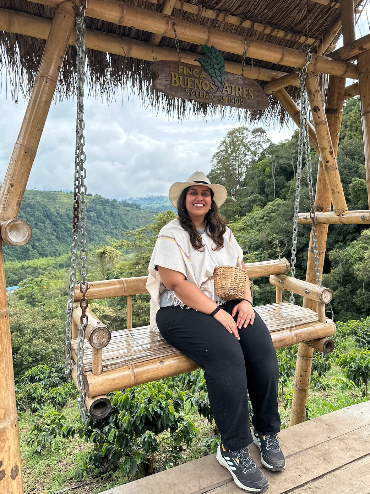
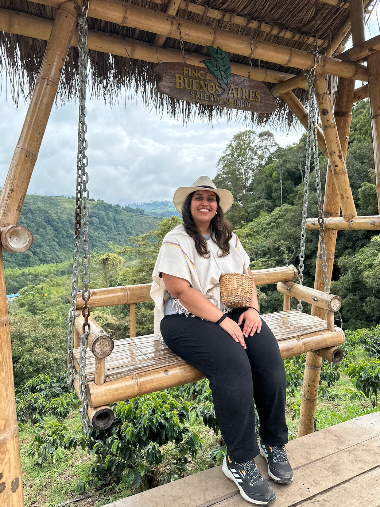

Did you know it's ridiculously hard to get from Seattle to anywhere in South America? There are hardly any direct flights, and almost all routes eventually land in Bogota, Colombia's capital. So I figured...why not make it a stop?
Two days in Bogota felt like a good place to start. It was my first time in South America, and as always, I began with a city walking tour. We wandered through La Candelaria, learned about Colombia's complicated history, admired its vibrant street art, and tried local food (empanadas, of course).
By the end of the day, I had seen most parts of the city. I didn't want to spent the next day doing nothing. So, in classic Shagun way, at 1 AM, I booked a 7 AM flight to a town I had once seen on Instagram.
Three hours of sleep later, I was at the airport. One short flight and a long, winding taxi ride later, I found myself in Salento, the gateway to Colombia's coffee region and the Cocora Valley. I bought a ticket for one of the colorful Jeep Willys and rode out to Cocora Valley, home to the tallest palm trees in the world. Surreal doesn't even begin to cover it. Every angle looked like it belonged on a passport cover. I couldn't stop staring. And then, I did something completely out of character, I decided to hike. Me, A hiker?
I am not a hiker. But the strangers around me said it wasn't "too bad". Running on too little time, not enough sleep, and a whole lot of impulsiveness, I started the climb, completely ignoring the fact that "not too bad" is wildly subjective.
It was steep. My legs ached. I was out of breath.
But as people passed me on their way down, they kept cheering me on:
"You've got this".
"It's worth it at the top".
Somehow, those small acts of kindness kept me going. There's something quietly beautiful about the way strangers lift each other up in moments like this.
I thought I had reached the top, but of course I hadn't. More encouragements came, and I pushed further. One thing about me is that I never miss a good view. Finally, I reached the point. Towering wax palms, clouds drifting between peaks, and everything wrapped in green. I sat on a patch of wet grass, pulled out a sandwich I had packed at the airport, set my GoPro on time lapse and just soaked it all in.
As I sat there, a line from my favourite movie Yeh Jawani hai Diwani echoed in my mind: "Kabhi kabhi jaha ho waha ruk kar, uss pal ko jee lo"
(Sometime, stop where you are and truely live the moment")
And that's exactly what I did.
After living the moment and taking photos, I started back down. Isn't it wild how easy the return feels? Like life, the hardest part is deciding to climb.
Back in the Willys Jeep, this time I sat in the front as a group of friends sang in the back. It felt like a scene from a movie. And somehow, I made it back in time for the coffee tour.
This region produces some of the best coffee in the world. I was handed a white poncho, hat and a woven basket (Totally felt like a full-fledged coffee farmer, until the bugs reminded me otherwise). As we stepped into the coffee fields, what stuck me the most wasn't the taste (though incredible), but the economics. For every 1 kilo of beans picked, a worker earner roughly 1,000 COP ($0.23). On a good day, they make around $10. The effort, precision, and dedication that goes into each cup of coffee truly humbled me.
We ended the tour with freshly brewed coffee. Then, we sat together, a Finnish couple with their kids, another couple split between Venezuela and the US who travel to meet halfway. People's stories always remind me how beautifully complicated life is.
Heart full, I returned to Salento. I picked up a postcard, a travel tradition, and waited for my evening ride. The same driver who had brought me earlier offered to take me back. It was dark, the road was deserted, and the language barrier was real. I would be lying if I said I wasn't scared. It was one of those moments you question in real time, especially as a woman traveling alone. But he got me back to the airport safely. And once again, I was reminded, not everyone is good, but most people are.
And just like that, it was time to leave Colombia. Onto Peru!
 
